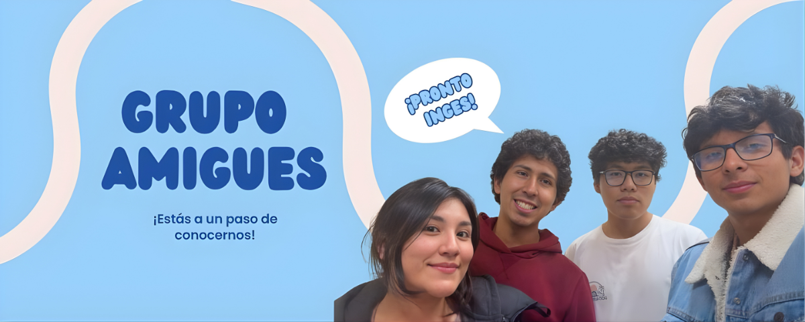

Somos estudiantes del séptimo semestre de la carrera de Ingeniería de Software en la universidad La Salle, Arequipa. Somos buenos amigos y nos gusta hacer actividades juntos después de clases. Uno de nuestros pasatiempos más frecuentes incluye comer y jugar juegos de mesa como Monopolio.
Tengo 24 años y no me gustan los colores pasteles y menos el rosado. Disfruto de aventuras como manejar bicicleta, ir a correr o sacar a pasear a mi mascota. A veces juego video juegos con mis amigos y me gusta hacerles muchas bromas. No me gusta la lectura y menos el tiempo en familia.
Tengo 20 años y me gustan los videojuegos, sobretodo los que son colaborativos con amigos. Disfruto de planes tranquilos como jugar juegos de mesa o ver partidos de fútbol, también suelo correr. Y la mayoría de veces paso tiempo con mi familia.
Tengo 22 años y me gustan los colores pastel, especialmente el rosado. Disfruto de planes tranquilos como caminar al aire libre, hacer postres y pasear a mis perritos. También me gusta la lectura y compartir tiempo en familia.
Tengo 19 años y me gusta el color negro y blanco, disfruto jugar fútbol y ver 412. También me gusta leer Darknet Diaries y a JBAR. En mi tiempo libre suelo aprender cosas nuevas y pasar tiempo relajándome con música o estar con la familia haciendo bromas.